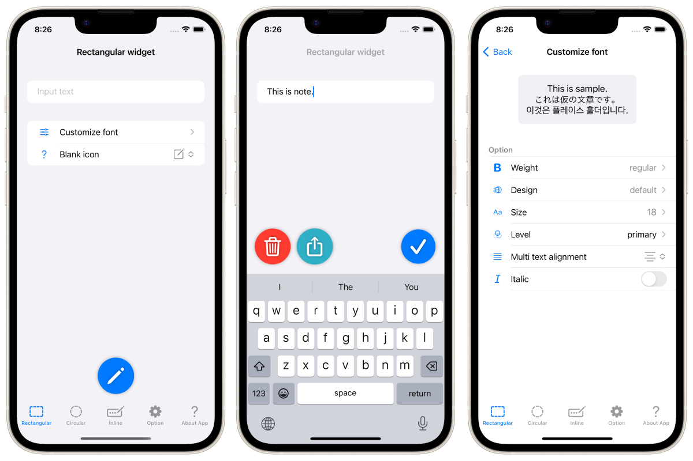
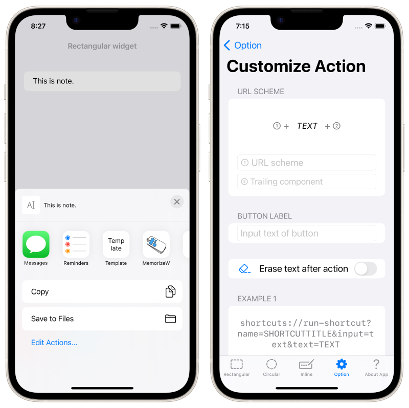
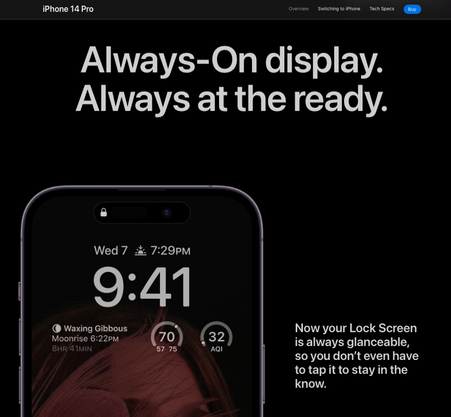

Додаток для блокнота, присвячений новій функції віджетів екрану блокування iOS 16, яка вийде восени 2022 року!


Це блокнот-додаток, присвячений віджету екрану блокування - додатку для iPhone/Apple Watch.
Коли ви хочете зробити нотатку, ви можете швидко написати нотатку на екрані блокування і перевірити нотатку на екрані блокування в будь-який час!
Працює з Apple Watch.
Дизайн нотатки на екрані блокування можна гнучко налаштовувати, тому ви можете використовувати його відповідно до різних цілей "залишати нотатки" та "відображати текст на екрані блокування".
Натискання віджету одразу запускає клавіатуру для редагування нотатки.




iPhone 14 Pro з функцією Always On Display перетворює iPhone на ваш найближчий блокнот.

Цитата: https://www.apple.com/jp/iphone-14-pro/
Безкоштовно
Приховати рекламу (160 ієн)